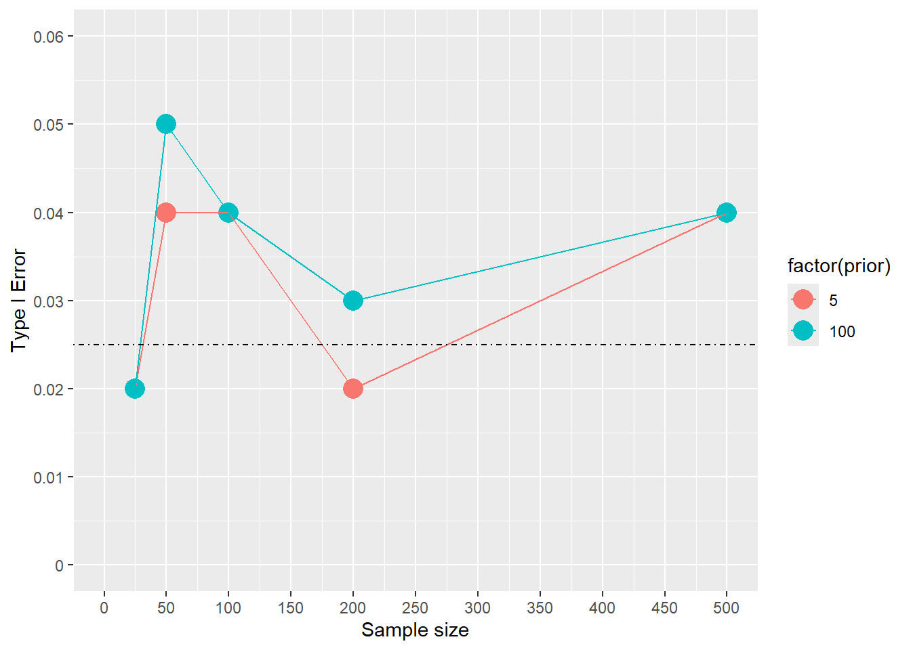
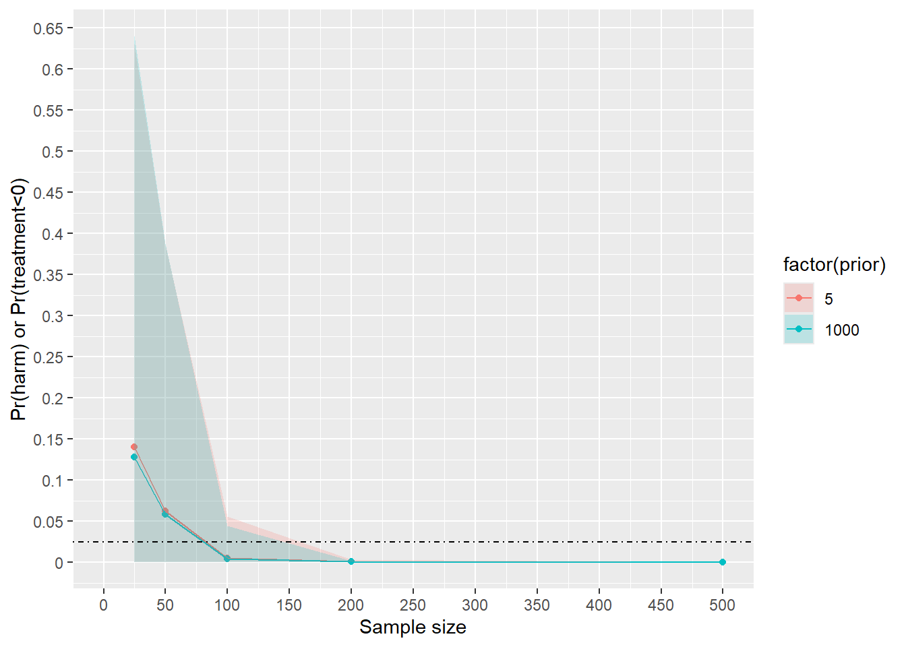

library(tidyverse)
library(brms)
library(gt)
library(gtsummary)
brms_summary <- function(x) {
posterior::summarise_draws(x, "mean", "sd", ~quantile(.x, probs = c(.025,0.975)))
}9 Simulating error in Frequentist and Bayesian clinical trial designs
Abstract
Simulations of error under Frequentist and Bayesian frameworks. Technically, in Bayesian framework, there is no type I error, instead, the error is the probability of making a mistake.
10 Load libraries
11 Introduction
Type I error in a Frequentist framework is rejecting the null hypothesis when the null hypothesis is true. Type I error does not apply in Bayesian framework, and instead, the focus on making an error when acting. This is making making a mistake in decision making, and can be thought of as 1-pr(benefit) (as an example).
I’ll apply simulations to assessing error rate under frequentistism (type I error) as well as under a Bayesian framework (probability of making a mistake). I want to compare 2 priors: one with large standard deviation (\(Normal(0,100)\)) vs one with a narrower standard deviation (\(Normal(0,5)\)).
Probability of benefit is defined as \(Pr(\beta)>0.95\)
Frequentist approach steps:
- Simulate 1000 datasets with a mean difference of 0, sd of 1 with difference sample sizes (50,100,200) 2.Approach for Frequentist type I error: For each dataset, Fit Bayesian model with two priors (N(0,5) and N(0,100))
- Obtain 95% credible interval and median
- Calculate how many times Pr(Benefit>0.95)
Bayesian approach steps:
- Simulate 1000 datasets with a mean difference of 4, sd of 6 with difference sample sizes (50,100,200)
- Approach for Bayesian type I error: For each dataset, fit bayesian model with two priors (N(0,5) and N(0,100))
- Obtain 95% credible interval and median
- Calculate how many times 1-Pr(Benefit>0.95) or Pr(harm)>0.05
Then, compare error for each approach by sample size and prior.
12 Frequentist simulation code
#fit initial model to update
n=100
df<-tibble(treatment=rbinom(n,1,.5))|>
rowwise()|>
mutate(y=ifelse(treatment ==0,rnorm(n=1,0,6),
rnorm(n=1,0,6)))
ffitf<-brm(y~treatment,data=df,prior=prior(normal(0,5)))# prior with N(0,5)
ffit1000f<-brm(y~treatment,data=df,prior=prior(normal(0,1000)))# prior with N(0,1000)
#simulation function for N(0,5 ) and N(0,1000) prior
simfit3 <- function(seed, n) {
set.seed(seed)
df<-tibble(treatment=rbinom(n,1,.5))|>
rowwise()|>
mutate(y=ifelse(treatment ==0,rnorm(n=1,0,6),
rnorm(n=1,0,6)))
outp<-update(ffitf,
newdata = df,
seed = seed,cores=4,recompile=FALSE,refresh=0,prior=prior(normal(0,5)))
ot<-outp|>
brms_summary()|>
data.frame()|>
filter(variable=="b_treatment")
benefit<-hypothesis(outp,"treatment >0",alpha=0.05)
ot$benefit<-benefit$hypothesis$Post.Prob
ot$prior<-5
###
outp2<-update(ffit1000f,
newdata = df,
seed = seed,cores=4,recompile=FALSE,refresh=0,prior=prior(normal(0,1000)))
ot2<-outp2|>
brms_summary()|>
data.frame()|>
filter(variable=="b_treatment")
benefit2<-hypothesis(outp2,"treatment >0",alpha=0.05)
ot2$benefit<-benefit2$hypothesis$Post.Prob
ot2$prior<-100
ot3<-rbind(ot,ot2)
return(ot3)
}12.1 Frequentist type I error Simulation
Many don’t agree with this, but we’re simulating outcomes under the null hypothesis with Bayesian models. Then, we can identify how often positive results are observed over the simulation.
###--Actual simulation--###
#not run because it takes a very long time
##ss is set to different sample sizes
#n_sim<-100 # number of simulations
#sim3<-tibble(expand.grid(seed=1:n_sim,ss=c(25,50,100,200,500)))|>
# group_by(seed,ss)|>
# do(out=simfit3(seed=.$seed,n=.$ss))|>
# unnest(out)
#head(sim3)
#saveRDS(sim3,"Power_analysis_simulations_outputs/Type_1_error_Frequentist_framework_priorN05_N01000.rds")
sim3<-readRDS("Power_analysis_simulations_outputs/Type_1_error_Frequentist_framework_priorN05_N01000.rds")
sim3.parse<-sim3|>
group_by(seed,ss,prior)|>
mutate(benefit_yesno=if_else(X2.5.>0,1,0))|>
group_by(ss,prior)|>
dplyr::summarize(mean=mean(benefit_yesno))`summarise()` has grouped output by 'ss'. You can override using the `.groups`
argument.sim3.parse# A tibble: 10 × 3
# Groups: ss [5]
ss prior mean
<dbl> <dbl> <dbl>
1 25 5 0.02
2 25 100 0.02
3 50 5 0.04
4 50 100 0.05
5 100 5 0.04
6 100 100 0.04
7 200 5 0.02
8 200 100 0.03
9 500 5 0.04
10 500 100 0.04ggplot(sim3.parse,aes(x=ss,y=mean,colour=factor(prior)))+geom_point(size=5)+geom_line()+scale_y_continuous(limits=c(0,.06),breaks=seq(0,0.06,.01),labels=seq(0,.06,.01))+geom_hline(lty="dotdash",yintercept = 0.025)+ylab("Type I Error")+xlab("Sample size")+scale_x_continuous(limits=c(0,500),breaks=seq(0,500,50),labels=seq(0,500,50))
13 Bayesian
13.1 The simulation function
#fit initial model to update
n=100
d<-tibble(treatment=rbinom(n,1,.5))|>
rowwise()|>
mutate(y=ifelse(treatment ==0,rnorm(n=1,0,6),
rnorm(n=1,4,6)))
ffit<-brm(y~treatment,data=d,prior=prior(normal(0,5)))# prior with N(0,5)
ffit1000<-brm(y~treatment,data=d,prior=prior(normal(0,1000)))# prior with N(0,1000)
#hypothesis(ffit,"treatment>0",alpha=0.05)
#simulation function for N(0,5 ) and N(0,1000) prior
simfit <- function(seed, n) {
set.seed(seed)
d<-tibble(treatment=rbinom(n,1,.5))|>
rowwise()|>
mutate(y=ifelse(treatment ==0,rnorm(n=1,0,6),
rnorm(n=1,4,6)))
outp<-update(ffit,
newdata = d,
seed = seed,cores=4,recompile=FALSE,refresh=0,prior=prior(normal(0,5)))
ot<-outp|>
brms_summary()|>
data.frame()|>
filter(variable=="b_treatment")
benefit<-hypothesis(outp,"treatment >0",alpha=0.05)
ot$benefit<-benefit$hypothesis$Post.Prob
ot$prior<-5
###
outp2<-update(ffit1000,
newdata = d,
seed = seed,cores=4,recompile=FALSE,refresh=0,prior=prior(normal(0,1000)))
ot2<-outp2|>
brms_summary()|>
data.frame()|>
filter(variable=="b_treatment")
benefit2<-hypothesis(outp2,"treatment >0",alpha=0.05)
ot2$benefit<-benefit2$hypothesis$Post.Prob
ot2$prior<-100
ot3<-rbind(ot,ot2)
return(ot3)
}13.2 Bayesian simulation
#n_sim<-100 # number of simulations
###--##comenting out simulation code - takes very long time
#sim2<-tibble(expand.grid(seed=1:n_sim,ss=c(25,50,100,200,500)))|>
# group_by(seed,ss)|>
# do(out=simfit(seed=.$seed,n=.$ss))|>
# unnest(out)
#saveRDS(sim2,"Power_analysis_simulations_outputs/Type_1_error_Bayesian_framework_priorN05_N01000.rds")
sim2<-readRDS("Power_analysis_simulations_outputs/Type_1_error_Bayesian_framework_priorN05_N01000.rds")|>
mutate(prior=if_else(prior==100,1000,prior))
head(sim2)# A tibble: 6 × 9
seed ss variable mean sd X2.5. X97.5. benefit prior
<int> <dbl> <chr> <dbl> <dbl> <dbl> <dbl> <dbl> <dbl>
1 1 25 b_treatment 3.14 1.61 -0.0541 6.33 0.973 5
2 1 25 b_treatment 3.50 1.68 0.220 6.85 0.983 1000
3 1 50 b_treatment 3.07 1.55 -0.00978 6.10 0.974 5
4 1 50 b_treatment 3.38 1.60 0.251 6.49 0.982 1000
5 1 100 b_treatment 4.46 1.10 2.27 6.60 1 5
6 1 100 b_treatment 4.69 1.12 2.52 6.91 1 100013.2.1 Side quest- Generate a function that can determine power for a given sample size
Grab data and run on your own.
#Get power
sim2.parse<-sim2|>
group_by(seed,ss)|>
mutate(benefit_yesno=if_else(X2.5.>0,1,0))|>
group_by(ss,prior)|>
dplyr::summarize(mean=mean(benefit_yesno))
sim2.parse
##plot out the power by
ggplot(sim2.parse,aes(x=ss,y=mean,colour=factor(prior)))+geom_line()+geom_point()+scale_x_continuous(limits=c(0,500),breaks=seq(0,500,50),labels=seq(0,500,50))
########---### create a power function so we can predict power given a sample size input
sim2.parse5<-sim2.parse|>
filter(prior==5)
# Hill model: y = ss^n / (K^n + ss^n)
# Use non-linear brms formula syntax
hill_formula <- bf(
mean ~ ss^n / (K^n + ss^n),
n + K ~ 1,
nl = TRUE
)
priors <- c(
prior(normal(2, 1), nlpar = "n", lb = 0),
prior(normal(60, 30), nlpar = "K", lb = 0),
# Use a proper prior for sigma on (0, ∞). Pick one:
prior(student_t(3, 0, 0.2), class = "sigma", lb = 0) # robust, fairly tight
)
fit_bayes <- brm(
formula = hill_formula,
data = sim2.parse5,
family = gaussian(), # still Gaussian
prior = priors,
control = list(adapt_delta = 0.95),
chains = 4, cores = 4
)
summary(fit_bayes)
# Create a tidy posterior prediction function
predict_hill <- function(ss_values) {
newdata <- data.frame(ss = ss_values)
posterior_epred(fit_bayes, newdata = newdata)
}
# Example: predict for ss = 75
mean(predict_hill(75))
##predict continuously from 0 to 500
powerf<-apply(predict_hill(seq(0,500,1)),2,mean)
q025<-apply(predict_hill(seq(0,500,1)),2,quantile,probs=0.025)
q975<-apply(predict_hill(seq(0,500,1)),2,quantile,probs=0.975)
powerf1<-tibble(mean=powerf,ss=seq(0,500,1),lci=q025,uci=q975)
###--plot with simulation points
ggplot(sim2.parse5,aes(x=ss,y=mean))+geom_point()+scale_x_continuous(limits=c(0,500),breaks=seq(0,500,50),labels=seq(0,500,50))+geom_line(data=powerf1,aes(x=ss,y=mean))+geom_ribbon(data=powerf1,aes(x=ss,ymin=lci,ymax=uci),alpha=.2)+xlab("Sample size")+ylab("Bayesian power Pr(benefit)>=0.95")
powerf1|>
filter(ss==77)13.2.2 Back to original goal: figure out pr(harm)
Calculate the pr(harm), which is 1-pr(benefit) for our simulations
harmd<-sim2|>
mutate(harm=1-benefit)|>
group_by(ss,prior)|>
summarize(mean=mean(harm),lcri=quantile(harm,prob=0.025),ucri=quantile(harm,0.975))`summarise()` has grouped output by 'ss'. You can override using the `.groups`
argument.harmd# A tibble: 10 × 5
# Groups: ss [5]
ss prior mean lcri ucri
<dbl> <dbl> <dbl> <dbl> <dbl>
1 25 5 0.140 0.00100 0.631
2 25 1000 0.128 0.000119 0.640
3 50 5 0.0629 0 0.386
4 50 1000 0.0587 0 0.388
5 100 5 0.00561 0 0.0561
6 100 1000 0.00469 0 0.0444
7 200 5 0.000872 0 0.00329
8 200 1000 0.000765 0 0.00213
9 500 5 0 0 0
10 500 1000 0 0 0 #plot out
ggplot(harmd,aes(x=ss,y=mean,colour=factor(prior),fill=factor(prior)))+geom_point()+geom_line()+geom_ribbon(alpha=0.2,aes(ymin=lcri,ymax=ucri),colour=NA)+scale_x_continuous(labels=seq(0,500,50),breaks=seq(0,500,50),limits=c(0,500))+scale_y_continuous(breaks=seq(0,.7,.05),labels=seq(0,.7,.05))+geom_hline(yintercept = 0.025,lty="dotdash")+xlab("Sample size")+ylab("Pr(harm) or Pr(treatment<0)")
So a prior with narrower sd produces a higher error rate than a larger sd prior.
14 Session info
sessionInfo()R version 4.5.0 (2025-04-11 ucrt)
Platform: x86_64-w64-mingw32/x64
Running under: Windows 11 x64 (build 26100)
Matrix products: default
LAPACK version 3.12.1
locale:
[1] LC_COLLATE=English_United States.utf8
[2] LC_CTYPE=English_United States.utf8
[3] LC_MONETARY=English_United States.utf8
[4] LC_NUMERIC=C
[5] LC_TIME=English_United States.utf8
time zone: America/New_York
tzcode source: internal
attached base packages:
[1] stats graphics grDevices utils datasets methods base
other attached packages:
[1] gtsummary_2.2.0 gt_1.0.0 brms_2.22.0 Rcpp_1.0.14
[5] lubridate_1.9.4 forcats_1.0.0 stringr_1.5.1 dplyr_1.1.4
[9] purrr_1.0.4 readr_2.1.5 tidyr_1.3.1 tibble_3.2.1
[13] ggplot2_3.5.2 tidyverse_2.0.0
loaded via a namespace (and not attached):
[1] tensorA_0.36.2.1 bridgesampling_1.1-2 utf8_1.2.4
[4] generics_0.1.3 xml2_1.3.8 stringi_1.8.7
[7] lattice_0.22-6 hms_1.1.3 digest_0.6.37
[10] magrittr_2.0.3 evaluate_1.0.3 grid_4.5.0
[13] timechange_0.3.0 mvtnorm_1.3-3 fastmap_1.2.0
[16] jsonlite_2.0.0 Matrix_1.7-3 backports_1.5.0
[19] Brobdingnag_1.2-9 scales_1.3.0 abind_1.4-8
[22] cli_3.6.4 rlang_1.1.6 munsell_0.5.1
[25] withr_3.0.2 yaml_2.3.10 tools_4.5.0
[28] parallel_4.5.0 tzdb_0.5.0 rstantools_2.4.0
[31] checkmate_2.3.2 coda_0.19-4.1 colorspace_2.1-1
[34] posterior_1.6.1 vctrs_0.6.5 R6_2.6.1
[37] matrixStats_1.5.0 lifecycle_1.0.4 htmlwidgets_1.6.4
[40] pkgconfig_2.0.3 RcppParallel_5.1.10 pillar_1.10.2
[43] gtable_0.3.6 loo_2.8.0 glue_1.8.0
[46] xfun_0.52 tidyselect_1.2.1 knitr_1.50
[49] farver_2.1.2 bayesplot_1.12.0 nlme_3.1-168
[52] htmltools_0.5.8.1 rmarkdown_2.29 compiler_4.5.0
[55] distributional_0.5.0